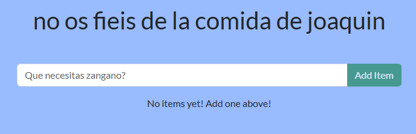
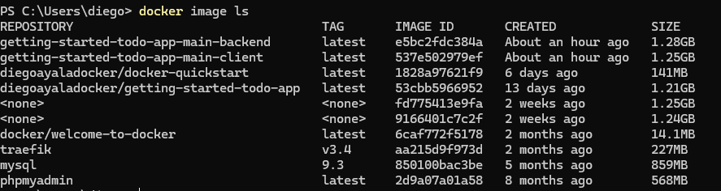
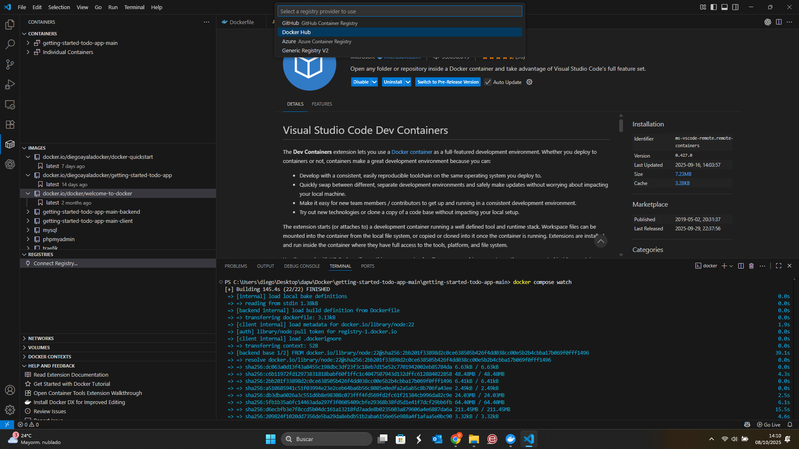
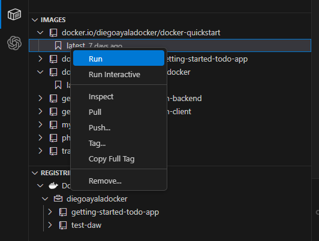

DAPW · Tarea
Docker 1..10
Instrucciones
Resuelve los ejercicios de Docker que se presentan a continuación.
Entrega un único PDF con capturas, organizado por número de ejercicio. Incluye los cambios realizados, los comandos utilizados y el resultado de las comprobaciones que se indican en cada apartado.
Preparación
Para los ejercicios 1 a 5, utiliza la aplicación de lista de tareas getting-started-todo-app trabajada en clase. Arráncala con Docker Compose y activa la sincronización de cambios con docker compose watch o docker compose up --watch. Comprueba que puedes abrir la aplicación en el navegador antes de modificarla.
Ejercicio 01
Mostrar saludos aleatorios
Ver diapositiva 36En backend/src/routes/getGreeting.js, sustituye el saludo fijo por un array llamado greetings con varios mensajes. Selecciona un saludo de forma aleatoria en cada petición utilizando Math.floor() y Math.random().
Comprobación: recarga la aplicación varias veces y documenta que puede mostrar distintos saludos. Incluye una captura del código modificado y capturas del resultado en el navegador.

Ver diapositiva 36 ↗
Ejercicio 02
Cambiar el texto del formulario
Ver diapositiva 37Abre client/src/components/AddNewItemForm.jsx y cambia el atributo placeholder del campo donde se escribe una nueva tarea por el texto «Que necesitas zangano?».
Comprobación: muestra el formulario con el campo vacío para que se vea el nuevo texto. Incluye una captura del cambio en el archivo y otra de la aplicación.
Ver diapositiva 37 ↗
Ejercicio 03
Personalizar el color de fondo
Ver diapositiva 38En client/src/index.scss, modifica la propiedad background-color para utilizar un color de tu elección.
Comprobación: muestra el valor elegido en el archivo y el nuevo fondo de la aplicación en el navegador.
Ver diapositiva 38 ↗
Ejercicio 04
Publicar una imagen desde la terminal
Ver diapositiva 46Construye una imagen de la aplicación modificada y publícala en tu cuenta de Docker Hub utilizando comandos. El repositorio de la imagen debe llamarse ejercicio4, con el formato tu_usuario/ejercicio4.
Comprobación: adjunta capturas del proceso de construcción, de la imagen disponible en tu equipo, de su subida y del resultado en Docker Hub. Identifica los comandos que has utilizado.

Ver diapositiva 44 ↗
Ejercicio 05
Publicar una imagen desde VS Code
Ver diapositiva 47Publica la imagen de la aplicación en Docker Hub utilizando las herramientas de contenedores de Visual Studio Code. Realiza la subida desde la interfaz de VS Code.
Comprobación: adjunta el resultado final de la publicación e identifica el nombre y la etiqueta de la imagen. Incluye una captura de la operación en VS Code y otra de la imagen publicada en Docker Hub.

Ver diapositiva 42 ↗

Ver diapositiva 42 ↗
Ejercicio 06
Mantener activo un contenedor Alpine
Ver diapositiva 72Partiendo de la imagen alpine, pasa de un contenedor que ejecuta una tarea puntual y termina (one-off) a uno que permanezca activo y en el que puedas ejecutar comandos.
Comprobación: muestra cómo lo arrancas, ejecuta varios comandos dentro del contenedor y comprueba su estado desde otra terminal. Explica brevemente qué mantiene el contenedor en ejecución.
Ejercicio 09
Explorar imágenes de Java
Ver diapositiva 74Busca en Docker Hub una imagen que permita trabajar con Java. Ejecuta un contenedor y comprueba la versión instalada con java -version.
Después, localiza una imagen más pequeña que incluya únicamente el entorno de ejecución JRE. Identifica ambas imágenes y sus etiquetas, compara sus tamaños y explica la diferencia entre disponer de un JDK y de un JRE.
Comprobación: incluye las referencias de Docker Hub, una captura de la versión de Java dentro del contenedor y otra que permita comparar el tamaño de las imágenes descargadas.
Ejercicio 10
Sumar dos números en Java con Docker
Ver diapositiva 75Crea un programa Suma.java que pida dos números por teclado, calcule su suma y muestre el resultado por pantalla.
- Prueba en local. Compila el archivo con
javac Suma.javay ejecútalo conjava Suma. Comprueba que solicita los dos números y muestra la suma correcta. - Prepara el Dockerfile. En el mismo directorio, crea un
Dockerfileque parta de una imagen de Java encontrada en Docker Hub, copieSuma.java, lo compile dentro de la imagen y establezca la ejecución del programa al iniciar el contenedor. La imagen elegida debe incluir el compiladorjavac. - Construye la imagen. Asigna un nombre a tu imagen y comprueba que la construcción termina correctamente.
- Ejecuta el contenedor. Arráncalo de forma que puedas introducir los dos números por teclado. Verifica que muestra el mismo resultado que la ejecución local.
Comprobación: incluye el código de Suma.java, el contenido del Dockerfile y capturas de la compilación y ejecución local, de la construcción de la imagen y de la suma realizada dentro del contenedor.